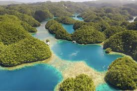

Siargao, Surigao del Norte
Siargao is a picturesque island in the Philippines known for its world-class surfing spots, pristine beaches, and lush tropical landscapes. It's a haven for surfers and nature enthusiasts alike.


Visitors to Siargao can surf, go island hopping, swim in natural pools, and enjoy a relaxed island vibe.